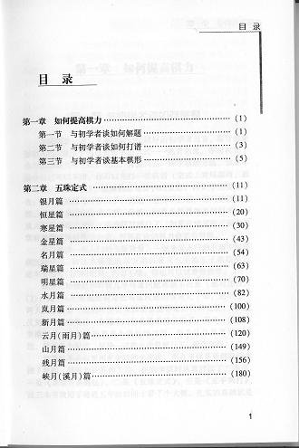

《五子棋实战必读-基础定式》
#1 《五子棋实战必读-基础定式》 作者：浩瀚铭剑 发表时间：2010-5-5 21:41:31
《五子棋实战必读-基础定式》一书现已由成都时代出版社（原蜀蓉棋艺出版社）正式出版发行。本书在编写过程中得到上海五子棋协会及众多棋友的帮助与支持，顾炜也在百忙之中为本书作序，在此表示感谢！由于本人水平有限，书中如有错漏之处希望各位指正，以便将来进一步修订并完善。
出版时间： 2010年5月
字 数： 150千字
版 次： 1
页 数： 191
印刷时间： 2010年5月
开 本： 32
装 帧： 平装
定 价： 13元
I S B N ： 9787546401690
内容提要：随着国内五子棋的普及与正规化，国内爱好者的水平也相应的水涨船高，但适合自学的教材较为缺乏。《五珠定石》一直以来作为中高级水平提高之用，实为不可多得的学习资料。
第一部分“与初学者谈……”是结合笔者十余年学习和教学经验，针对爱好者入门遇到的问题和自学的方法做了简要的说明。

如有棋友在本地购书不便，
#2 Re:《五子棋实战必读-基础定式》 作者：浩瀚铭剑 发表时间：2010-5-5 21:42:57
无条件的支持
#3 Re:《五子棋实战必读-基础定式》 作者：黄药师 发表时间：2010-5-5 21:47:38
哪里有的卖？#4 Re:《五子棋实战必读-基础定式》 作者：浩瀚铭剑 发表时间：2010-5-5 22:09:35
新华书店在卖吧，全国发行的。
#5 Re:《五子棋实战必读-基础定式》 作者：水月 发表时间：2010-5-6 0:01:58
= = 貌似很不错～#6 Re:《五子棋实战必读-基础定式》 作者：黄药师 发表时间：2010-5-6 8:12:43
13元哟，性价比很高啊！#7 Re:《五子棋实战必读-基础定式》 作者：王小 发表时间：2010-5-10 21:44:43
新华书店没有卖。
成都棋院楼下有卖。
#8 Re:《五子棋实战必读-基础定式》 作者：王小 发表时间：2010-5-10 21:50:41
www.amazon.cn 上有卖#9 Re:《五子棋实战必读-基础定式》 作者：潜龙勿用吉 发表时间：2010-5-20 18:32:00
宁波新华书店库存三本 让我买了一本 还剩两本
#10 Re:《五子棋实战必读-基础定式》 作者：极地剑客 发表时间：2010-5-25 19:24:58
到手一本~还可以~相当于中文版的五珠...#11 Re:《五子棋实战必读-基础定式》 作者：中中 发表时间：2010-9-10 11:48:13
极地大哥在哪买的？是长沙啵？
我去新华书店看看...
#12 Re:《五子棋实战必读-基础定式》 作者：五子米猫 发表时间：2010-9-19 16:38:41
北京这边西单图书大厦、图书城都有卖。书不厚，但内容丰富，正在慢慢研究......
#13 Re:《五子棋实战必读-基础定式》 作者：与郎共五 发表时间：2010-9-19 17:47:15
已拜读，含金量高#14 Re:《五子棋实战必读-基础定式》 作者：岑小鱼 发表时间：2010-12-30 0:22:05
请问下这本书如果购买10本 邮寄到长沙市 价格是多少啊....#15 Re:Re:《五子棋实战必读-基础定式》 作者：小红眼镜 发表时间：2010-12-30 2:18:49
引用：
原文由 岑小鱼 发表于 2010-12-30 0:22:05 :
请问下这本书如果购买10本 邮寄到长沙市 价格是多少啊....
 淘宝上搜索一下，一堆拉。给你找了一家，免邮的。一本10元。
淘宝上搜索一下，一堆拉。给你找了一家，免邮的。一本10元。
你也可以自己找找其他家，买前问问掌柜的有没有货先。咳咳。http://item.taobao.com/item.htm?id=5351405250&ad_id=&am_id=&cm_id=&pm_id=
#16 Re:Re:《五子棋实战必读-基础定式》 作者：极地剑客 发表时间：2010-12-30 4:41:46
引用：
原文由 中中 发表于 2010-9-10 11:48:13 :极地大哥在哪买的？是长沙啵？
我去新华书店看看...
TB购买的~一般本地没的~我都TB上看看~书籍在TB上比较便宜~运气好还可以包邮寄~
#17 Re:《五子棋实战必读-基础定式》 作者：岑小鱼 发表时间：2011-1-1 18:04:57
主要是还想了解这书跟另外一个帖子说的有签名的书 是否是同一本？ 如果是的话还是有签名比较好哈#18 Re:Re:《五子棋实战必读-基础定式》 作者：虎哥 发表时间：2011-1-2 23:41:29
超过3本免邮费，如果想要签名，可以直接跟李老师说，是同一本书，我到手六本，有李老师签名。
详细的最好直接联系李老师问吧。
#19 Re:《五子棋实战必读-基础定式》 作者：三国老凯 发表时间：2011-1-3 0:28:53
上面QQ是李老师的吗？#20 Re:《五子棋实战必读-基础定式》 作者：三国老凯 发表时间：2011-1-3 0:34:25
http://www.amazon.cn/s/ref=nb_sb_noss?__mk_zh_CN=%E4%BA%9A%E9%A9%AC%E9%80%8A%E7%BD%91%E7%AB%99&url=search-alias%3Dstripbooks&field-keywords=%E4%BA%94%E5%AD%90%E6%A3%8B此处有卖。网银支付#21 Re:《五子棋实战必读-基础定式》 作者：茗弈小九 发表时间：2011-2-18 14:19:59
哪里有卖贵吗？
#22 Re:《五子棋实战必读-基础定式》 作者：愉悦深思 发表时间：2011-3-1 12:13:27
这书初段之前，似乎看不大懂的......#23 Re:《五子棋实战必读-基础定式》 作者：猪无戒 发表时间：2011-8-9 9:50:02
我刚读完，是一本很妙的书！！
#24 Re:《五子棋实战必读-基础定式》 作者：白衣神童小剑魔 发表时间：2011-8-10 11:20:46
这书已经有电子版下载了 （杰出连珠网）
#25 Re:《五子棋实战必读-基础定式》 作者：阔哥 发表时间：2011-8-10 11:21:58
13块，比买谱划算#26 Re:《五子棋实战必读-基础定式》 作者：小丸.net 发表时间：2011-8-10 11:26:26
绝版签名本耶。。。才15块。。。。我买了20本。。。。当作礼物送给朋友们了。。。#27 Re:《五子棋实战必读-基础定式》 作者：自来水 发表时间：2011-8-10 11:27:34
买谱不靠谱....#28 Re:《五子棋实战必读-基础定式》 作者：爱因思谈 发表时间：2011-10-4 8:48:24
都是强人啊，呵呵